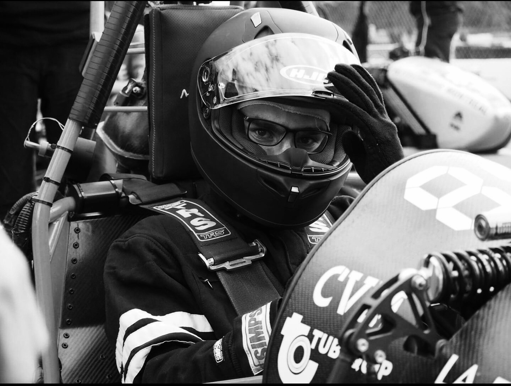

L’événement FSAE, fait partie de la série de compétitions organisées par la SAE Collegiate Design Series et destinées aux étudiants en ingénierie. Le concept derrière la Formula SAE est le suivant : l’équipe travaille pour une compagnie fictive de design qui conçoit, fabrique, teste et présente un prototype de voiture destiné aux pilotes de courses amateurs. La voiture est évaluée en fonction de sa performance en accélération, freinage, maniabilité et fiabilité. Depuis 2006, l’équipe Cégep du Vieux Montréal, le FSAECVM, participe au projet grâce à la collaboration des départements suivants : Techniques de génie mécanique, Technologie de maintenance industrielle, Design industriel, Sciences de la nature et Graphisme.
La SAE (Society of Automotive Engineers) est une société qui regroupe environ 80 000 membres à travers le monde qui ont en commun un intérêt pour le transport. Elle fut fondée en 1905 et présidée par Andrew Riker. Elle avait comme vice-président un jeune ingénieur prometteur : Henry Ford. La société regroupe aujourd’hui des ingénieurs, administrateurs, éducateurs et étudiants. Ces derniers proviennent de plus de 350 institutions d’ingénierie à travers le monde. La SAE offre, entre autres, une plateforme d’échange d’idées et d’informations techniques enrichissantes. Ce sont des gens dévoués qui partagent un intérêt commun : l’avancement des technologies du transport pour l’évolution de notre société. L’évènement auquel nous participons fait partie de la série de compétitions organisées par la SAE Collegiate Design Series et destinées aux étudiants en ingénierie. Le concept derrière Formule SAE est le suivant : l’équipe travaille pour une compagnie fictive de design qui conçoit, fabrique, teste et présente un prototype de voiture destiné aux pilotes de courses amateurs. La voiture est évaluée en fonction de sa performance en accélération, freinage, maniabilité et fiabilité.
L’élève développe alors son autonomie, sa capacité à travailler en équipe, son leadership, ses habiletés de communication et toutes les compétences essentielles à la pratique professionnelle du technicien. L'élève applique les notions théoriques à la pratique. De plus, des liens d’amitié se tissent tout au long du parcours, ce qui facilite leur intégration.Au terme de ce projet, l’élève acquiert une expérience personnelle et professionnelle très favorable à son intégration au marché du travail.
Depuis 2006 le Cégep du Vieux Montréal participe au projet grâce à la collaboration des départements suivants : Techniques de génie mécanique, Technologie de maintenance industrielle, Design industriel, Technologie de l’électronique industrielle et Graphisme.